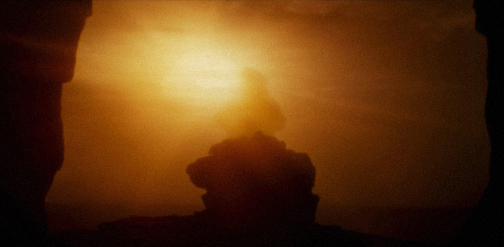

After the death of his uncle Owen and aunt Beru, Luke decided to join Obi-Wan Kenobi on his mission to deliver the droid R2-D2 to Bail Organa on Alderaan. Along the way he met Han Solo and began to learn the way of the Jedi. He also eventually, and unknowingly at first, met up with his long lost twin sister, Leia, and joined her Rebellion efforts against the Galactic Empire.
Several years later, Luke took on his nephew as a Jedi apprentice. Ben however, was being groomed by another powerful force wielder, Snoke, into turning to the dark side, just like his grandfather before him. In 28 ABY, Luke sensed the growing darkness in Ben and briefly contemplated killing him in his sleep. Ben awoke to his uncle standing above him wielding his lightsaber and finally fell to the dark side. After his nephew’s destruction of his Jedi temple and the death of his other students, Luke exiled himself to Anch-To.
In 34 ABY, Luke confronted Kylo Ren at the Resistance base on Crait, letting Kylo engage him in battle to distract him long enough for the Rebels to escape to safety. Luke apologized to his nephew for failing him before warning that striking him down would only result in more pain for himself. Ignoring these warnings, Kylo chose to charge forward and slash his uncle across the torso. Instead of victory, Kylo was shocked to discover that Luke was projecting an illusion of himself from his home on Anch-To. The mental stress of sustaining such a lifelike illusion proved to be too much and Luke eventually let go, letting himself slowly fade away and become one with the force.
